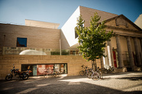

The town hall is Leuven's pride and joy. Moreover, it's one of the
best-known Gothic town halls worldwide. It took
three architects and thirty years to build it. Leuven's 'Hall of
Fame' features 236 statues, which were only added
to the façade after 1850.
M-Museum Leuven

The museum displays old and new
art inspired by Leuven’s versatility. The collection is mainly
focused on the art production in Leuven and Brabant from the
Middle Ages to the 19th century. It includes Constantin Meunier,
Jef Lambeaux and Georges Minne.
Send a mail to museumM@leuven.be for a guided tour. Read more at our website.
Brewery Stella Artois
Stella Artois is part of the world’s largest
brewery concern, AB InBev, and is still firmly rooted in its home
base of Leuven.